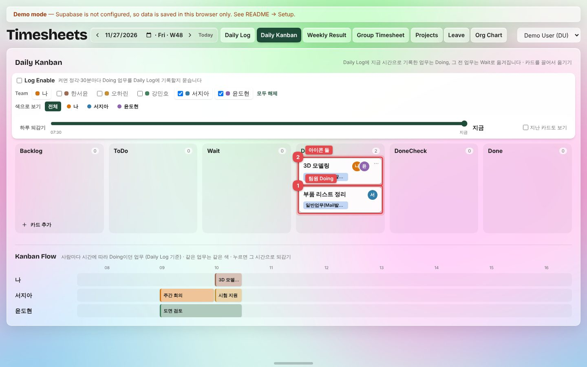
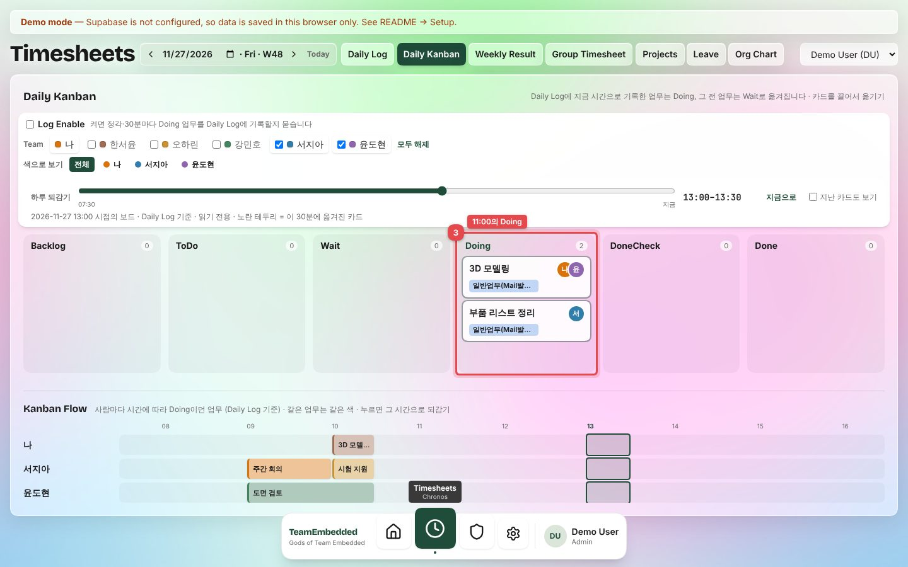

검증 보고서 · E2E
Kanban에 있는 내용이 Doing으로 옮겨가고, 그 블록에 Figma 공동작업 UI처럼 사용자 아이콘이 붙게. 원하는 사용자를 다 체크해 두면 시간에 따라 어떤 Doing이 이루어지는지 볼 수 있게. (결정) 팀원 카드는 Doing일 때만, 같은 업무는 한 블록에 아이콘 여러 개.
| # | 테스트 케이스 | 기대 결과 | 실제 결과 | 판정 근거 (Assertion) | 결과 | 증적 |
|---|---|---|---|---|---|---|
| 1 | 체크한 팀원은 Doing인 업무만, 블록에 그 사람 아이콘 | 체크 목록 5명, Doing: 부품 리스트 정리(서지아)·3D 모델링(윤도현), Wait에 팀원 카드 없음, 아이콘 글자 서·윤 | 목록 [한서윤,오하린,강민호,서지아,윤도현] · Doing [부품 리스트 정리@서지아,3D 모델링@윤도현] · Wait [] · 아이콘 [서,윤] | kanban-team 체크박스, Doing 칸 블록의 data-people, Wait 칸, avatar 글자 | PASS | 화면 1 |
| 2 | 같은 업무를 여러 사람이 Doing → 한 블록에 아이콘 여럿 | Doing의 '3D 모델링' 블록 1개, 아이콘 [나, 윤], 내 카드라 끌기·메뉴 있음; '부품 리스트 정리'(서지아만)는 끌기·메뉴 없음 | 블록 1개, 사람 '나,윤도현', 아이콘 [나,윤], 내 블록 draggable=true·메뉴 1, 서지아 블록 draggable=false·메뉴 0 | data-people, avatar 글자, draggable, Options 버튼 수 | PASS | 화면 1 |
| 3 | 슬라이더를 옮기면 아이콘이 그 시간의 Doing 블록으로 | 11:00: 3D 모델링@나 · 시험 지원@서지아 · 설계 회의@윤도현 / 13:00: 3D 모델링@나,윤도현 · 부품 리스트 정리@서지아 | 11:00 [3D 모델링@나,시험 지원@서지아,설계 회의@윤도현] / 13:00 [3D 모델링@나,윤도현,부품 리스트 정리@서지아] | 되감은 Doing 칸의 블록과 data-people | PASS | 화면 2 |
| 4 | 사람 색(아이콘·팀원 창 같은 색), 색으로 보기 | 서지아 아이콘 rgb(212, 76, 71), Daily Log 팀원 창 점도 rgb(212, 76, 71); 서지아 색만 → 서지아 블록만(내 카드도 숨김) | 아이콘 rgb(212, 76, 71), 팀원 창 rgb(212, 76, 71), 서지아만 [서지아] | avatar / 색 점 background-color, 색 필터 후 블록의 data-people | PASS | — |
| 5 | 새로 고쳐도 체크 그대로, 모두 해제하면 내 카드만 | 체크 [서지아, 윤도현]; 해제 후 내 카드 1장(3D 모델링), 아이콘 0 | 체크 [서지아,윤도현]; 카드 1, 아이콘 0 | checked 체크박스, kanban-card / avatar 수 | PASS | — |
| 6 | 볼 사람이 없으면(L1) 팀원 줄 없음 | 0개 | 0개 | kanban-team 수 === 0 | PASS | — |
| 7 | 페이지 오류 없음 | 0건 | 0건 | pageerror 수 === 0 | PASS | — |
빨간 테두리와 번호는 표의 테스트 케이스 번호입니다. 그 요소를 확인해 판정했습니다.

